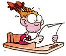

Pop tests (except this one) are: A. The teacher's way of monitoring your scholastic progress. B. The teacher's way of weeding out the mentally insufficient. C. The teacher's way of keeping you on restrictions until you're old enough to leave home.